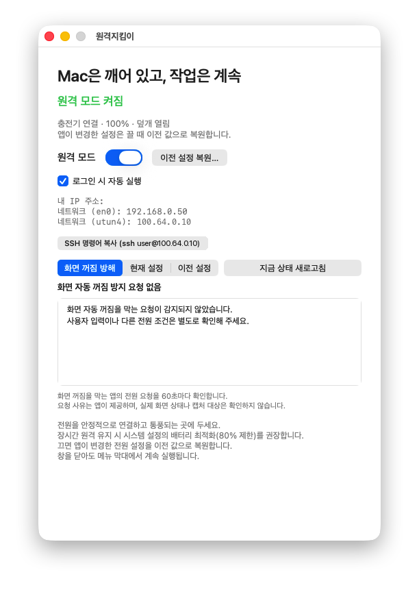

앱이 바꾼 설정만 안전 복원
켜기 직전 전원 설정을 로컬 JSON에 보관했다가 끌 때 원래 값으로 되돌립니다. 외부에서 바뀐 항목이 있으면 덮어쓰기 전에 먼저 확인합니다.
원격 접속 중 Mac이 잠들지 않도록 전원 설정만 안전하게 관리합니다. 작업을 마치고 끄면 앱이 바꾼 항목만 원래 값으로 복원합니다.
macOS 13 이상 · Apple Silicon · MacBook · Mac mini · Mac Studio
체험용 미리보기 토글입니다. 실제 Mac 설정은 바뀌지 않습니다.

원격 작업에 필요한 전원 항목만 다루고, macOS의 실제 상태로 변경과 복원을 확인합니다.
켜기 직전 전원 설정을 로컬 JSON에 보관했다가 끌 때 원래 값으로 되돌립니다. 외부에서 바뀐 항목이 있으면 덮어쓰기 전에 먼저 확인합니다.
영상을 재생하거나 화면을 붙잡는 앱의 이름·PID·사유를 제어 창과 메뉴에서 확인합니다. 시스템 잠자기 방지와는 명확히 구분합니다.
활성 IPv4 주소와 ssh 사용자@IP 명령어를 제어 창과 메뉴 막대에서 바로 복사해 다른 기기에서 즉시 접속할 수 있습니다.
MacBook 미충전·20% 이하 시 경고하며, 장시간 연결 시 과충전을 줄이도록 macOS 배터리 충전 최적화 설정으로 바로 이동합니다.
모든 Mac은 전원을 안정적으로 연결하고 통풍되는 곳에 두세요. MacBook에서는 배터리 사용 중에도 잠자기 방지가 적용됩니다.
원격지킴이는 전원 설정만 관리하며, 원격 접속과 네트워크 연결 자체를 설정하거나 보장하지 않습니다.
설치 스크립트가 ZIP과 SHA-256 체크섬·번들 서명을 확인한 뒤 응용 프로그램 폴더에 안전하게 교체합니다.
터미널 한 줄 설치 (권장)
기존 앱이 실행 중이라면 원격 모드를 끄고 종료한 뒤 실행하세요.
curl -fsSL https://raw.githubusercontent.com/mozzi-papa/mac-remote-lid/main/install.sh | bash
ZIP을 풀어 원격지킴이.app을 /Applications 폴더로 옮깁니다.
로컬 서명 빌드이므로 차단 시 시스템 설정 → 개인정보 보호 및 보안에서 ‘그래도 열기’를 선택합니다.
창을 닫아도 메뉴 막대에서 실행됩니다. 작업을 마치면 토글을 꺼 이전 설정으로 복원하세요.
macOS의 시스템 전원 설정(pmset)을 변경하기 위해 필요합니다. 인증 창은 macOS가 직접 처리하며 앱은 비밀번호나 상주 도우미를 보관하지 않습니다.
이전 전원 설정과 저장 시각을 Mac의 Application Support/RemoteLid/restore.json에 보관하고, 복원이 확인되면 삭제합니다. 별도 계정이나 외부 서버 전송은 없습니다.
최신 macOS 보안 정책에 따라 시스템 설정 → 제어 센터(또는 메뉴 막대에서 허용)에서 원격지킴이 토글을 켜 주시면 다시 표시됩니다.
앱을 다시 열어 ‘이전 설정 복원…’을 선택하면 됩니다. 기록이 손상된 경우의 수동 긴급 해제 명령은 sudo pmset -a disablesleep 0입니다.
시스템·유휴 잠자기 방지는 데스크톱 Mac에서도 동작합니다. 내장 배터리와 덮개가 없는 Mac에서는 배터리 경고를 생략합니다.
현재 빌드는 Apple Silicon과 macOS 13 이상을 대상으로 하며 Intel 빌드는 제공하지 않습니다. 원격 접속(SSH, 화면 공유, Tailscale 등)은 사용 환경에 맞게 별도로 설정해 주세요.